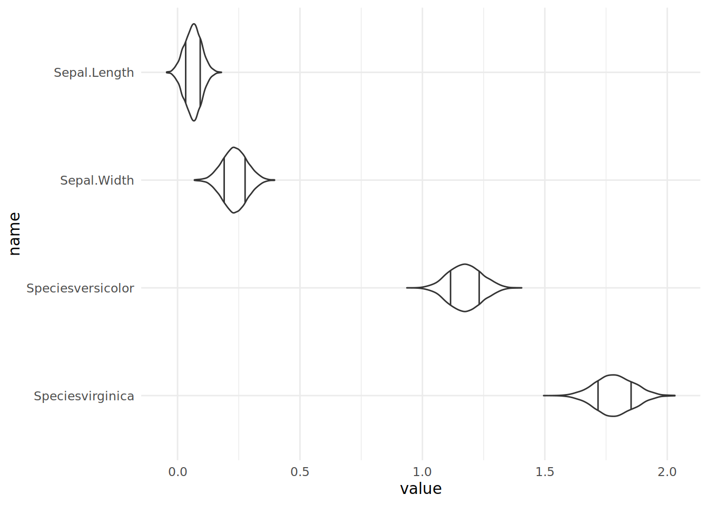
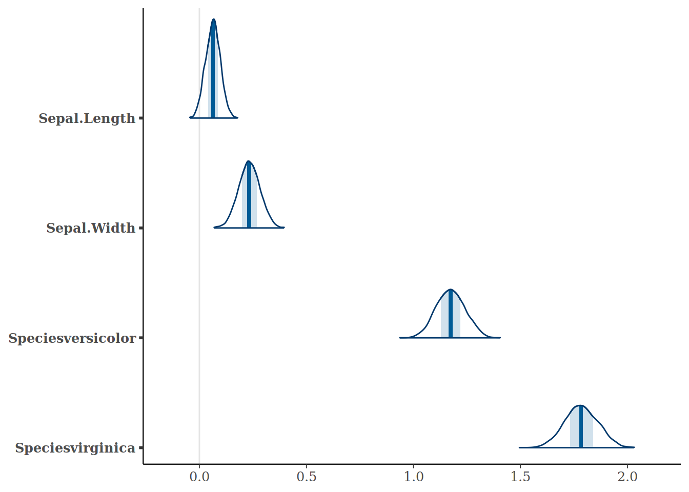

model <- rstanarm::stan_glm(Petal.Width ~ Sepal.Length + Sepal.Width + Species,
data=iris,
refresh=0)Plotting Bayesian Parameter Distributions with R Tidyverse
I’m currently reading Regression and Other Stories which contains lovely plots of coefficients and their distributions. What really impressed me is how easily I could solve this with the few concepts in the tidyverse.
Suppose we’ve got an rstanarm model like this:
We can access all the coefficients from the posterior draws using as.matrix. With a few standard transformations we can plot the distribution of each of the coefficients.
library(magrittr)
model %>%
# Convert it to a data frame of coefficients
as.data.frame() %>%
# Remove the intercept and standard deviation estimates
dplyr::select(-`(Intercept)`, -`sigma`) %>%
# Pivot into long form, one row per variable and estimate
tidyr::pivot_longer(dplyr::everything()) %>%
# Reorder the variables for plotting in order of descending (median) value
dplyr::mutate(name = forcats::fct_reorder(name, dplyr::desc(value))) %>% #
# Draw a violin plot, with 20th and 80th percentiles marked
ggformula::gf_violin(value ~ name, draw_quantiles=c(0.2, 0.8)) +
# Draw the variables on the vertical axis
ggplot2::coord_flip() +
# Chang the theme
ggplot2::theme_minimal()
While this is simpler and prettier with Bayesplot, I think it really shows the flexibility of the tidyverse.
bayesplot::mcmc_areas(model,
regex_pars=c("Sepal.Length", "Sepal.Width", "Species.*"))
The least flexible piece in this is ggplot2. If I want to use a density plot rather than a violin plot, the only way I can work out how to do this is with faceting which makes the plots too small and hard to compare. I need to write custom code to only plot the top halves of the violin. And whenever I use a bar graph in ggplot2 I always have to reread how to use stat. Nevertheless there’s sufficient existing plots to plot almost anything, and the environment is remarkably flexible for solving data problems like this.